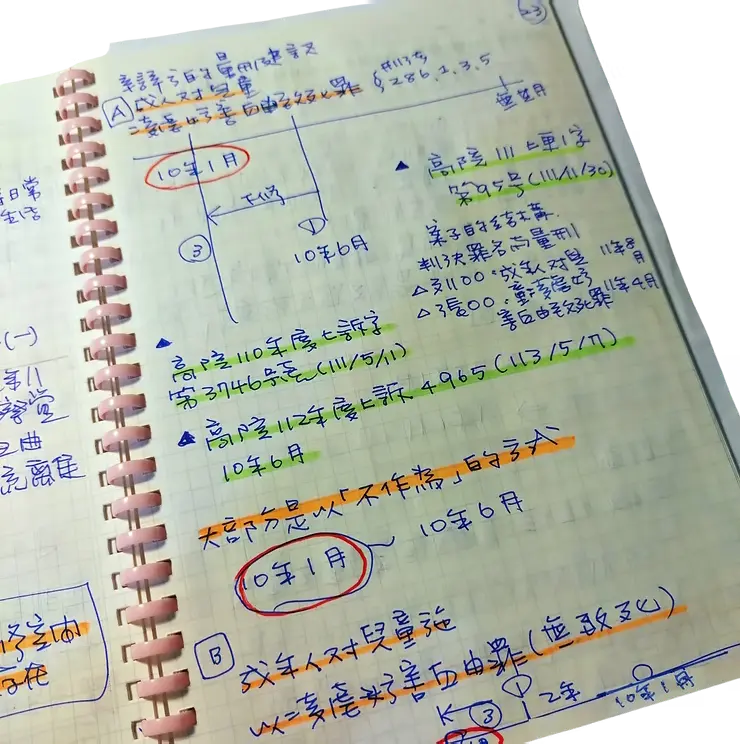

SENTENCING ARGUMENTS · DAY 10
监所关注小组原始记录护童行动联盟重制导读
第十次审判期日
剀剀案国民法官庭审记录｜2025年5月7日（三）
科刑辩论不是新的被告证词。要理解两人的责任定位，必须把DAY10的检辩主张，放回DAY9两名被告的原始问答逐项核对。
本页涉及儿童不当对待、死亡与刑度主张。内容依监所关注小组DAY10公开旁听记录及其7页PDF重制；它不是法院正式逐字笔录。检察官论告、辩护人主张、被告最后陈述与法院认定是不同层次，不能互相替代；艺术主视觉亦不是证据。
第十日庭审速览
法庭进入科刑辩论。上午由检方与刘彩萱辩护人陈述，下午先处理国民法官释疑，再由刘若琳辩护人、检方及两方辩护人补充辩论，最后听取两名被告陈述。
先厘清四组容易混淆的数字
- 检方上午：刘彩萱无期徒刑；刘若琳16–18年。
- 检方下午释疑：刘若琳第一阶段上限18年、无下修空间，因此明确回答「就是18年」。
- 刘彩萱辩方：论及比较案例时提到18年，最终总结建议16–18年。
- 刘若琳辩方：维持无罪答辩；备位量刑说明中，原文先载致死罪建议10年6月，后页小结又列10年1月，另就不致死罪列1年6月。本页保留这项原文落差，不自行选定其一。
从上午论告到15:14审理完毕
- 检察官科刑辩论
从犯罪情状、生活与品行、犯后态度、复归与一般预防提出量刑主张；审判长转达国民法官希望避免重复事实辩论。
- 休庭；10:39再入庭
国民法官提出三项释疑：两名被告刑度差异、刘若琳为何落在16–18年，以及其第一阶段落点。
- 刘彩萱辩护人科刑辩论
以照顾困境、具体照顾行为、制度缺口、无前科、犯后态度与复归可能性主张16–18年。
- 续行审理・检方释疑
检方说明刘若琳属中度至高度、为次要照顾者且包含不作为参与，第一阶段上限18年且无下修，明确主张18年。
- 刘若琳辩护人科刑辩论
以生命历程、人格特质、情感依赖、参与程度与复归可能性分三阶段论述，同时声明仍作无罪答辩。
- 检辩补充辩论
检方反驳制度与人生困境可作为理由；刘若琳辩方要求把两人的行为模式与参与程度分开看待。
- 最后陈述・审理完毕
刘彩萱道歉并表示接受应有惩罚；刘若琳表示没有要陈述。诉讼参与代理人请求注明家属不在道歉现场。
科刑三阶段｜同一因子，在检辩手中如何被解读
犯罪情状与责任刑
犯罪动机、刺激、手段、义务违反、参与程度及与被害人的关系，先形成责任刑范围。
检方强调持续性、痛苦与一般预防；辩方分别主张照顾困境及参与差异。生活、品行与智识
生活史、工作、家庭、无前科与社会功能等个人情状，是否足以在第一阶段范围内调整。
检方主张两人均无下修理由；辩方则提出长期工作与人生历程。犯后态度与复归
救护、道歉、法会、和解、治疗意愿、家庭支持及再犯风险，须逐项判断，不能合并成一个「悔意」标签。
相关材料的证明力与最终刑度，仍由法院依法综合判断。三方科刑主张｜谁主张什么
以下是庭上论告的结构化导读，不是法院已采纳的结论。
检察官
刘彩萱：无期徒刑刘若琳：18年
- 强调115天内几乎连续的行为、儿童承受的恐惧与痛苦。
- 主张两人生活、品行与智识因素均没有下修空间。
- 以特别预防、一般预防及维系司法规范信赖支持严刑。
- 下午释疑时将上午的16–18年明确化为18年。
刘彩萱辩方
最终建议：16–18年- 将动机定位为照顾困境下的恶性循环与失控，反对简化为「以虐取乐」。
- 列举基础照护、向外求援、无前科、长期工作与家庭责任。
- 以法会、认罪、坦承错误、联系和解及救护行为主张犯后调整。
- 指出出养交接、专业训练、监督与支援系统仍值得制度反思。
刘若琳辩方
维持无罪答辩另作备位量刑论述
- 主张刘若琳与刘彩萱的动机、行为模式与参与程度应分开评价。
- 以生命历程、压抑顺从、高情感需求与避免冲突解释其应对方式。
- 主张第一阶段落在法定刑下限、第三阶段具有较高复归可能。
- 原文对致死罪备位建议先载10年6月、后载10年1月；不致死罪列1年6月。
刘彩萱 × 刘若琳｜责任定位对照专区
八个主题共48个DAY9原始问答锚点。点入后会出现「返回第十日」工具，让被告原句与本日量刑论告可以往返核对。
对照主题刘彩萱｜DAY9原句刘若琳｜DAY9原句DAY10阅读界线
照顾角色与参与程度
C29｜幼儿园地点C30｜三姐妹共同经营C43｜不法手段非教学
角色争点检方称次要照顾者仍有参与；辩方要求分开评价。证照或亲属关系都不是单独结论。
动机、收入与压力
不同解释压力可说明脉络，不会自动成为减刑原因，也不能取代对具体行为与义务的判断。
伤势认知与察觉
C46｜急诊时感受C47｜否认与医师接触C51｜中午后活动力
R03｜称只看到部分R15｜医师逐项说明R16｜未仔细看报告
须回证据知情、可察觉性与死因应回到医疗证词、影像与完整卷证，不能只凭论告语句决定。
隐瞒、说谎与删除记录
C23｜侦讯未说真话C25｜鉴定时仍说谎C50｜承认不够坦诚
R05｜对话内容不适当R06｜自行删除LINER16｜报告未细看
分别评价一人多阶段未坦白，一人承认删除对话；内容、时间与对犯后态度的影响不能合并。
法会、30万元与修复
直接落差宗教仪式、资金、告知内容与家属修复是不同问题；家属未在道歉现场亦由代理人请求注明。
道歉与最后陈述
R04｜后悔没有多问R17｜仍否认犯行R20｜「没有想那么多」
不能只看一句DAY10一人道歉、一人不陈述；沉默、否认与悔意的法律评价不能只靠语感。
跨日连结只提供阅读定位。DAY9是被告问答，DAY10是检辩科刑论告；两日资料不能互相替代。
被告最后陈述与家属在场注记
刘彩萱「我对不起，觉得很抱歉，对不起家属、对不起A童、对不起社会大众，会坦诚面对，接受应有的惩罚。」
刘若琳「我没有什么要陈述的。」
原始记录所附手写庭审笔记
下图原载于DAY10 PDF第1页。它呈现整理者的庭审工作笔记，本站保留来源脉络，不把手写图表当作法院正式笔录或独立证物。

完整科刑辩论记录依庭审程序逐段重制
本区以7页PDF打印档为底本，依发言角色重排为左右对话框；长篇论告再按编号拆成主题卡。段落内的PDF换行仅作版面整理，不改写原句。如PDF与监所关注小组网页原文有落差，另以“网页原文补遗”标示，不混入PDF文字层。
左列法院、检方与程序发言右列辩护人与被告陈述左右位置仅供辨识发言角色，不代表法院采信或责任判断。
正在载入完整科刑辩论记录…
来源、版本与证据界线
监所关注小组〈DAY10｜2025年5月7日（三）第十次审判期日〉及其7页PDF打印档。
查看原始网页 ↗PDF共7页、1,366,202位元组；SHA-256：03256d3bafe560c2c6c57523bf3997209ccf1157c1a3a2789db17d321499d281。本站不内嵌PDF viewer。
检方上午16–18年、下午明确18年；刘若琳辩方致死罪备位建议先载10年6月、后页小结列10年1月。另有一项刘彩萱辩护人补充辩论只见于繁体原始网页、未见于7页PDF，本站以补遗卡分开标示。
科刑主张不是判决；问题前提不是事实；被告最后陈述不是全部犯后态度；跨日比对是阅读索引，不替法院判断证明力与刑度。